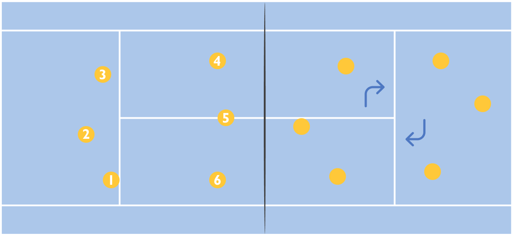

SKILL
發球
ps.
注意發球的動作應是流暢且連貫的，有助於提高發球的效果，拋球的距離和高度也很重要。
發球者面對球網，朝發球方位稍微跨出左腳，左手將球向上拋在右肩前上方約一公尺高(依個人習慣調整)，躬身挺胸，右臂舉起往後，在將手軸伸舉至肩上，用全掌或將拇指內屈，以掌心擊球，擊球瞬間手臂盡量伸直。
可根據對手的防守站位，適時調整發球的方向和速度，增加發球多樣性。
接球
ps.
預備接球時，建議可將腳尖稍微墊起，這樣可以更快地啟動腳部，以更快到接球適當位置。
雙腳與肩同寬，膝蓋微彎，身體壓低，同時觀察來球的方向和旋轉，以判斷來球軌跡，並提前移動腳步以確保站在接球路線上，提前預判很重要!
可用手臂進行微小的調整，以引導來球進入理想的接球位置，手臂應該盡量打直，但不要僵硬。
利用腿部帶動上半身及手臂以緩衝來球的力量，使球能穩定接起。接球後，保持手臂的平穩，不要過度擺動，這樣球比較不會噴掉!
舉球
ps.
舉球不需要用盡全力，手指及手腕盡量保持輕鬆，以確保動作的流暢，和球的穩定及方向的正確。
用指尖而不是手掌舉球，這樣可更精確控制球的方向，指尖的動作應該輕柔而敏捷，避免持球。
兩隻手形成一個三角形，手指自然彎曲。
注視攻擊手，確保目光集中，有助於提高舉球的精確性。舉球的瞬間，透過腿部的力量進行微小的起跳，過程中應保持上半身的穩定性，這有助於確保舉球的平穩和方向的控制。可利用腰部的轉動參與舉球動作，這可以增加舉球的遠度和變化。
攻擊
ps.
擊球手腕小技巧: 手掌靠近掌根的地方會先接觸球，並在瞬間全掌貼到球，再利用手腕將球向前推讓球能形成由前而後的旋轉
非擊球手的那側腳稍微向前，形成一個稍微開張的步態，彎曲膝蓋，使身體保持低姿態，預備起跳，起跳後上半身稍微轉向攻擊方向。若是右手擊球者，身體可能會稍微偏向右側，反之亦然。
攻擊的手舉起，肘部彎曲，形成拉弓的動作。非攻擊的手用來穩定身手手體平衡。腰部輕微轉動，將肩膀轉向攻擊方向。這有助於增加擊球範圍和提供更多的力量。注視攻擊目標，確保對手的動態和位置，以便更好地應對，最後將球擊出。
攔網
ps.
注意手掌應該是平的，而不是張開的。用手指彈性地合攏，並在起跳時，保持肩膀平行於網，這有助於更好地掌握和操控球。
雙腳與肩同寬站在網前，確保站位合適，彎曲膝蓋，保持身體低位，有助於更迅速地反應和進行跳躍，同時增加控制力。在瞭解對手攻擊方式的基礎上，觀察攻擊手的動作，尤其是手和手腕，以更好地預測攻擊方向。選擇適當的時機起跳。通常，當攻擊手舉起手時，是起跳的良好時機。在跳躍的過程中，將雙手的攔網點放在攻擊手的預計擊球點上，以產生最大的壓力，阻擋攻擊。落地後保持平衡，迅速回到防守位置。
CONCEPT
球員在場上被分為六個位置， 分為三個前排和三個後排，彼此間不得越位， 球員由一號位順時針移動至六號位，按照順序進行，不得自行交換位置，得分後得以輪轉一個位置，以此方式循環至比賽結束。